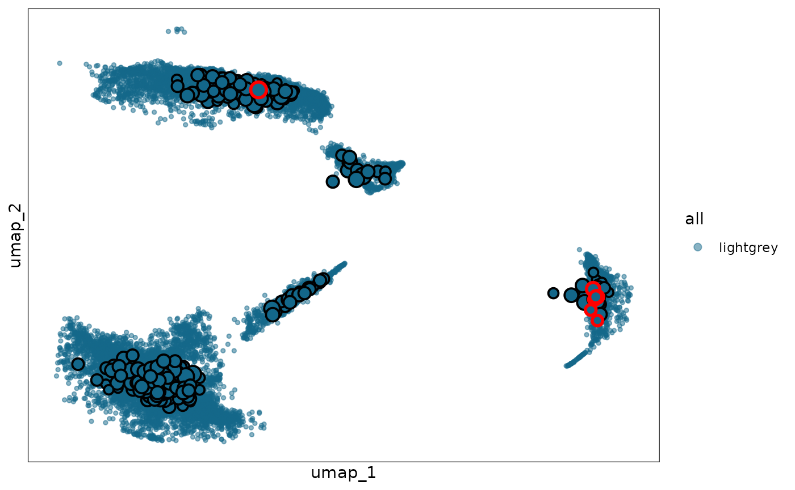

Extension: mcRigor two-step
Pan Liu
18 October 2025
mcRigor-4-twostep.RmdIntroduction
Overview
In this tutorial, we demonstrate how to use the mcRigor two-step extension of mcRigor to further dissect previously identified dubious metacells and reorganize their constituent cells into more trustworthy metacells. We will apply mcRigor two-step to a semi-synthetic single-cell RNA sequencing (scRNA-seq) dataset with known ground-truth metacell trustworthiness.
As its name suggests, mcRigor two-step operates in two consecutive steps:
Step 1 (function
mcRigorTS_Step1): Identify the single cells that constitute dubious metacells and need to be re-partitioned.Step 2 (function
mcRigorTS_Step2): Re-partition the identified single cells under the optimized granularity level and output the final metacell partition.
Input preparation
As for the main functionalities of mcRigor, we also work on two main
inputs in mcRigor two-step: 1. the raw scRNA-seq data and 2. candidate
metacell partitions generated by either existing metacell partitioning
methods or ad hoc approaches. The raw scRNA-seq data needs to be
provided as a Seurat object, obj_singlecell. The
semi-synthetic scRNA-seq data, whose generation process is described in
Liu
and Li, 2024, stored as a rds file syn.rds, is
available with the mcRigor package as an example. The metacell
partitions should be provided as a dataframe,
cell_membership, showing the assignment of single cells to
metacells in each partition. Specifically, each column of this dataframe
should represent the matacell partition corresponding to one granularity
level and each row of the dataframe should represent one single cell.
Note that we require the column namse of the dataframe to be set as the
granularity level values in the character type. The metacell partitions
for the semi-synthetic scRNA-seq data generated by the SEACells method
(Persad et
al., 2023), stored as a csv file
seacells_cell_membership_rna_syn.csv, is available with the
mcRigor package as an example. This csv file contains series of metacell
partitions, which were generated under different granularity levels.
Note that granularity level,
,
is a key parameter for metacell partitioning and is defined as the ratio
of the number of single cells to the number of metacells. We first load
these inputs:
sc_dir = system.file('extdata', 'syn.rds', package = 'mcRigor')
obj_singlecell= readRDS(file = sc_dir)
membership_dir = system.file('extdata', 'seacells_cell_membership_rna_syn.csv', package = 'mcRigor')
cell_membership <- read.csv(file = membership_dir, check.names = F, row.names = 1)Step 1: identify single cells that constitute the dubious metacells
In this tutorial, we focus on the metacell partition corresponding to
the granularity level
,
specified by tgamma = 50. We first run the main mcRigor
function mcRigor_DETECT to check whether this partition
contains any dubious metacells. If no dubious metacells are detected,
there is no need to apply mcRigor two-step.
tgamma = 50
detect_res = mcRigor_DETECT(obj_singlecell = obj_singlecell, cell_membership = cell_membership, tgamma = tgamma)
table(detect_res$mc_res)
#>
#> dubious trustworthy
#> 28 240We proceed with mcRigor two-step because dubious metacells exist in
this partition We call the function mcRigorTS_Step1 to
identify the single cells that constitute dubious metacells (under a
lower divergence score threshold) and need to be re-partitioned. Note
that we input the permutation results, detect_res$TabMC,
obtained from the previous code block to save computation time here,
although it is also acceptable to leave this argument as its default
value (NULL). We need to specify the metacell partitioning
method (e.g., SEACells, MetaCell, MetaCell2, SuperCell, or MetaQ) by
setting the argument method, ensuring that the function
generates outputs in the correct format.
sc_membership = cell_membership[[as.character(tgamma)]]
names(sc_membership) = rownames(cell_membership)
step1_res = mcRigorTS_Step1(obj_singlecell = obj_singlecell, sc_membership = sc_membership, TabMC = detect_res$TabMC, method = 'seacells')
#> Testing thresholds (Thre) not provided. Calculating thresholds with defaults...The Seurat object of single cells that need to be re-partitioned is
stored in the obj_sc_dub field of the output
step1_res. If the metacell partitioning method used is
SEACells, MetaCell2, or MetaQ,, mcRigorTS_Step1 will
automatically generate two CSV files (counts.csv and
metadata.csv) in the current working directory. These files
can be directly used as input for the corresponding metacell
partitioning methods in Python.
step1_res$obj_sc_dub
#> An object of class Seurat
#> 1982 features across 2883 samples within 1 assay
#> Active assay: RNA (1982 features, 1982 variable features)
#> 3 layers present: counts, data, scale.data
#> 2 dimensional reductions calculated: pca, umap
list.files("seacells/")
#> [1] "counts.csv" "metadata.csv"Step 2: Re-organize the single cells into more trustworthy metacells
We then need to apply the chosen metacell partitioning method (e.g.,
SEACells, MetaCell, MetaCell2, SuperCell, MetaQ) to these identified
single cells to obtain more trustworthy metacell partitions for them,
under granularity level smaller than tgamma (recommend
obtaining all the candidate paritions corresponding to granularity
levels from 2 to tgamma-1). One can refer to the Implementing
metacell partitioning methods tutorial for more guidnance on how to
obtain the metacell partitions. The candidate metacell partitions can be
stored in csv file and read into an R object
cell_membership_twostep using
cell_membership_twostep <- read.csv(file = "/path/to/the/csv/file", check.names = F, row.names = 1).
For illustration purpose in this tutorial, we set
cell_membership_twostep as the partitions corresponding to
small granularity levels in cell_membership_all.
cell_membership_twostep = cell_membership[ , as.numeric(names(cell_membership)) < 50]
cell_membership_twostep = cell_membership_twostep[colnames(step1_res$obj_sc_dub),]We call the function mcRigorTS_Step2 to select the
optimal granularity level and output the final metacell partition with
remaining dubious metacells flagged.
step2_res = mcRigorTS_Step2(step1_res = step1_res, obj_singlecell = obj_singlecell, cell_membership_twostep = cell_membership_twostep)
#> Names of identity class contain underscores ('_'), replacing with dashes ('-')
#> First group.by variable `Metacell` starts with a number, appending `g` to ensure valid variable names
#> This message is displayed once every 8 hours.The Seurat object of the final metacells are stored in the
obj_metacell_final field of the output
step2_res with the dubious metacell detection results
recorded in its metadata under the name mcRigor. Another
field, obj_metacell_final_withsc, is the Seurat object of
the final metacells where all dubious metacells have been dissected into
their constituent single cells (i.e., no dubious metacells remain).
Users can choose which object to use depending on their analytical
needs. In addtion, the output step2_res includes two
visualization fields: plot and plot_withsc,
which correspond to UMAP plots of single cells with
obj_metacell_final and
obj_metacell_final_withsc metacells projected onto the UMAP
space, respectively.
step2_res$obj_metacell_final
#> An object of class Seurat
#> 2000 features across 311 samples within 1 assay
#> Active assay: RNA (2000 features, 0 variable features)
#> 2 layers present: counts, data
step2_res$plot
Session information
sessionInfo()
#> R version 4.5.1 (2025-06-13)
#> Platform: x86_64-pc-linux-gnu
#> Running under: Ubuntu 24.04.3 LTS
#>
#> Matrix products: default
#> BLAS: /usr/lib/x86_64-linux-gnu/openblas-pthread/libblas.so.3
#> LAPACK: /usr/lib/x86_64-linux-gnu/openblas-pthread/libopenblasp-r0.3.26.so; LAPACK version 3.12.0
#>
#> locale:
#> [1] LC_CTYPE=C.UTF-8 LC_NUMERIC=C LC_TIME=C.UTF-8
#> [4] LC_COLLATE=C.UTF-8 LC_MONETARY=C.UTF-8 LC_MESSAGES=C.UTF-8
#> [7] LC_PAPER=C.UTF-8 LC_NAME=C LC_ADDRESS=C
#> [10] LC_TELEPHONE=C LC_MEASUREMENT=C.UTF-8 LC_IDENTIFICATION=C
#>
#> time zone: UTC
#> tzcode source: system (glibc)
#>
#> attached base packages:
#> [1] stats graphics grDevices utils datasets methods base
#>
#> other attached packages:
#> [1] ggplot2_4.0.0 Seurat_5.3.0 SeuratObject_5.2.0 sp_2.2-0
#> [5] mcRigor_1.0 BiocStyle_2.36.0
#>
#> loaded via a namespace (and not attached):
#> [1] deldir_2.0-4 pbapply_1.7-4 gridExtra_2.3
#> [4] rlang_1.1.6 magrittr_2.0.4 RcppAnnoy_0.0.22
#> [7] spatstat.geom_3.6-0 matrixStats_1.5.0 ggridges_0.5.7
#> [10] compiler_4.5.1 reshape2_1.4.4 png_0.1-8
#> [13] systemfonts_1.3.1 vctrs_0.6.5 stringr_1.5.2
#> [16] pkgconfig_2.0.3 fastmap_1.2.0 labeling_0.4.3
#> [19] promises_1.3.3 rmarkdown_2.30 ragg_1.5.0
#> [22] purrr_1.1.0 xfun_0.53 cachem_1.1.0
#> [25] jsonlite_2.0.0 goftest_1.2-3 later_1.4.4
#> [28] spatstat.utils_3.2-0 irlba_2.3.5.1 parallel_4.5.1
#> [31] cluster_2.1.8.1 R6_2.6.1 ica_1.0-3
#> [34] spatstat.data_3.1-8 stringi_1.8.7 bslib_0.9.0
#> [37] RColorBrewer_1.1-3 reticulate_1.43.0 spatstat.univar_3.1-4
#> [40] parallelly_1.45.1 lmtest_0.9-40 jquerylib_0.1.4
#> [43] scattermore_1.2 Rcpp_1.1.0 bookdown_0.45
#> [46] knitr_1.50 tensor_1.5.1 future.apply_1.20.0
#> [49] zoo_1.8-14 sctransform_0.4.2 httpuv_1.6.16
#> [52] Matrix_1.7-3 splines_4.5.1 igraph_2.2.0
#> [55] tidyselect_1.2.1 abind_1.4-8 yaml_2.3.10
#> [58] spatstat.random_3.4-2 spatstat.explore_3.5-3 codetools_0.2-20
#> [61] miniUI_0.1.2 listenv_0.9.1 plyr_1.8.9
#> [64] lattice_0.22-7 tibble_3.3.0 withr_3.0.2
#> [67] shiny_1.11.1 S7_0.2.0 ROCR_1.0-11
#> [70] evaluate_1.0.5 Rtsne_0.17 future_1.67.0
#> [73] fastDummies_1.7.5 desc_1.4.3 survival_3.8-3
#> [76] polyclip_1.10-7 fitdistrplus_1.2-4 pillar_1.11.1
#> [79] BiocManager_1.30.26 KernSmooth_2.23-26 plotly_4.11.0
#> [82] generics_0.1.4 RcppHNSW_0.6.0 scales_1.4.0
#> [85] globals_0.18.0 xtable_1.8-4 glue_1.8.0
#> [88] lazyeval_0.2.2 tools_4.5.1 data.table_1.17.8
#> [91] RSpectra_0.16-2 RANN_2.6.2 fs_1.6.6
#> [94] dotCall64_1.2 cowplot_1.2.0 grid_4.5.1
#> [97] tidyr_1.3.1 nlme_3.1-168 patchwork_1.3.2
#> [100] cli_3.6.5 spatstat.sparse_3.1-0 textshaping_1.0.4
#> [103] spam_2.11-1 viridisLite_0.4.2 dplyr_1.1.4
#> [106] uwot_0.2.3 gtable_0.3.6 sass_0.4.10
#> [109] digest_0.6.37 progressr_0.17.0 ggrepel_0.9.6
#> [112] htmlwidgets_1.6.4 farver_2.1.2 htmltools_0.5.8.1
#> [115] pkgdown_2.1.3 lifecycle_1.0.4 httr_1.4.7
#> [118] mime_0.13 MASS_7.3-65